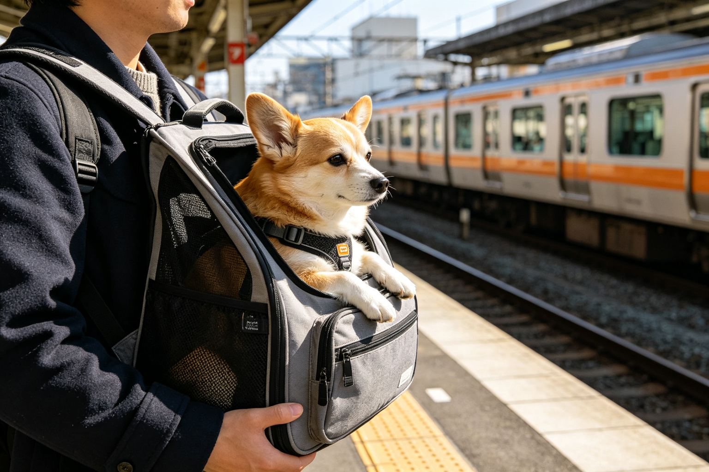
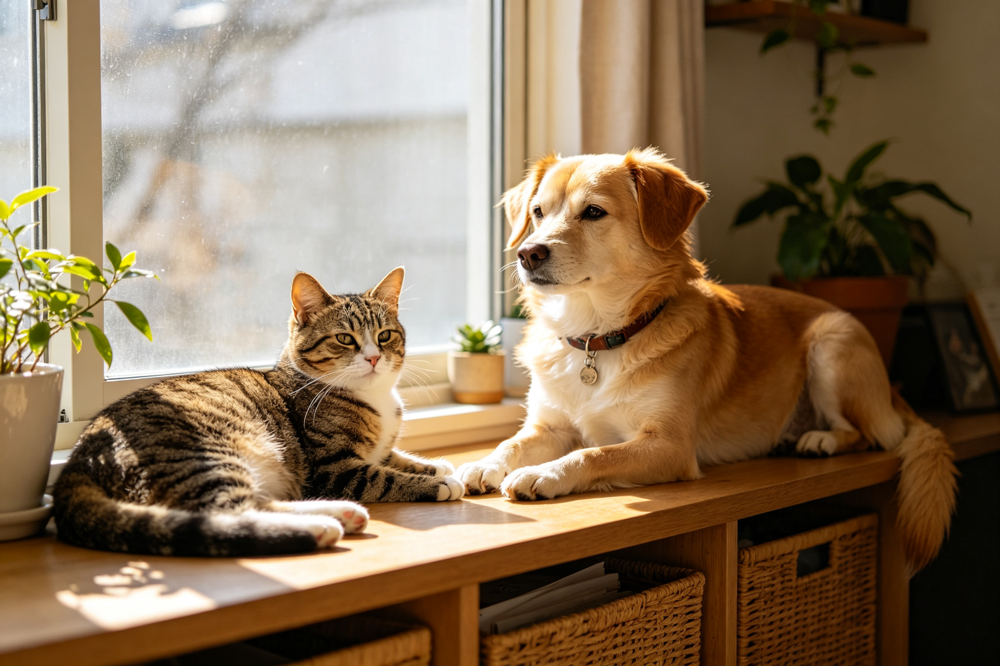
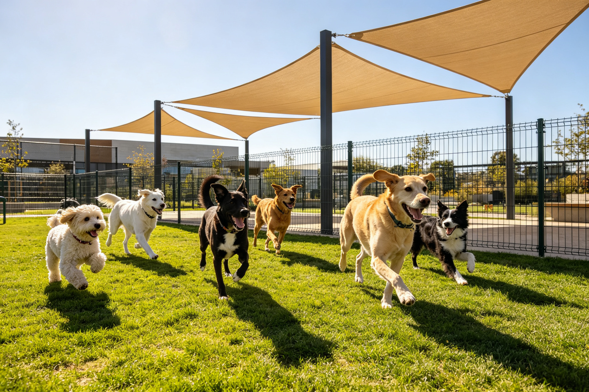
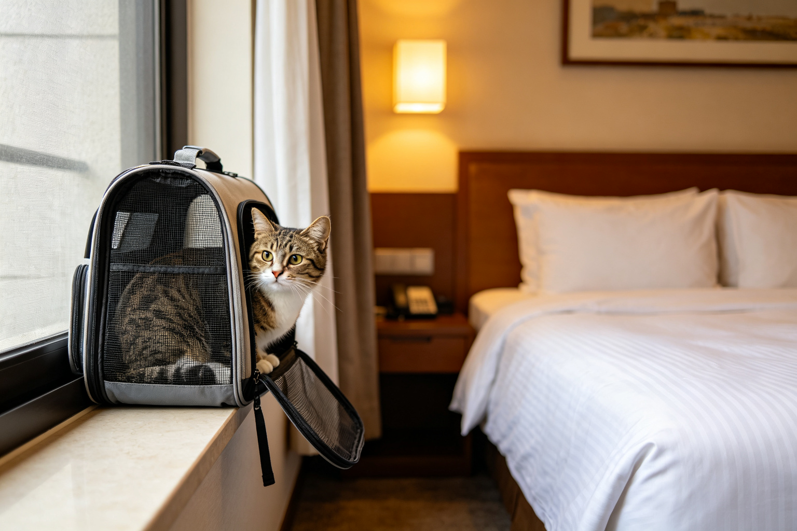
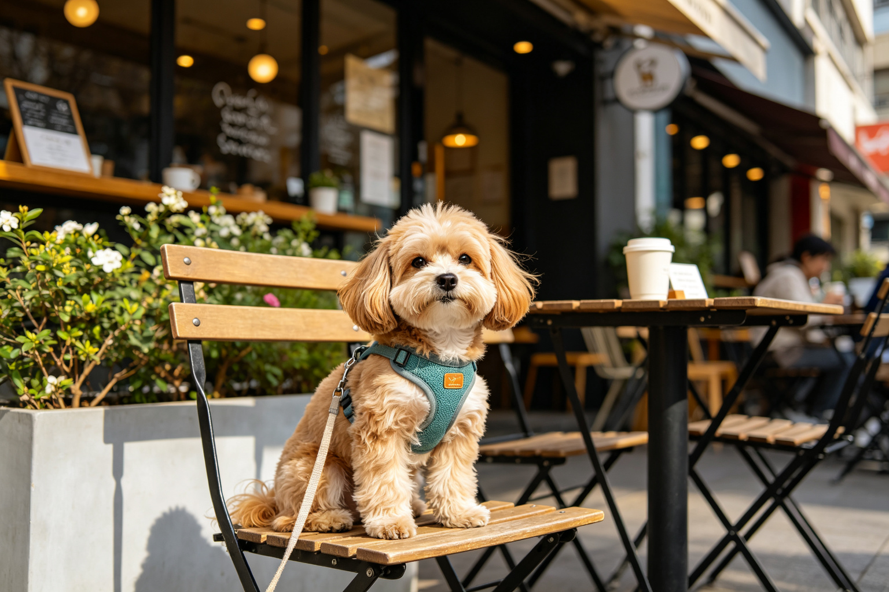
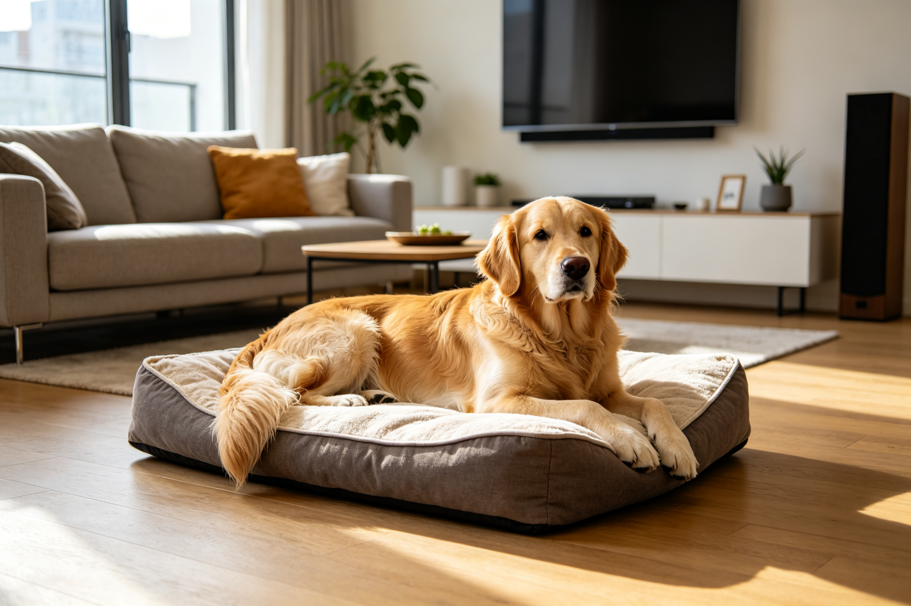
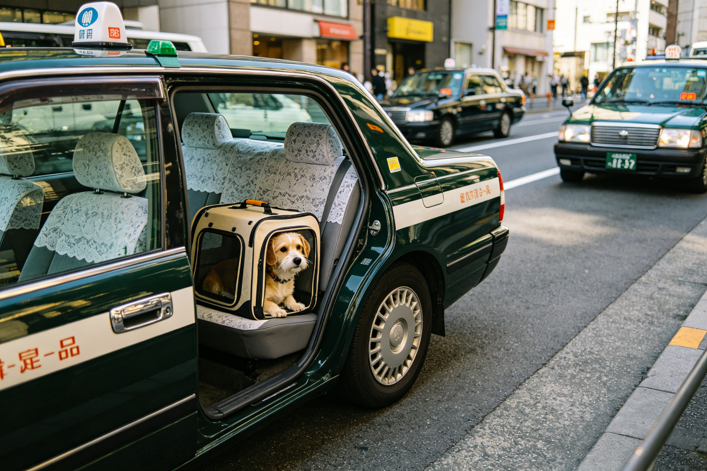
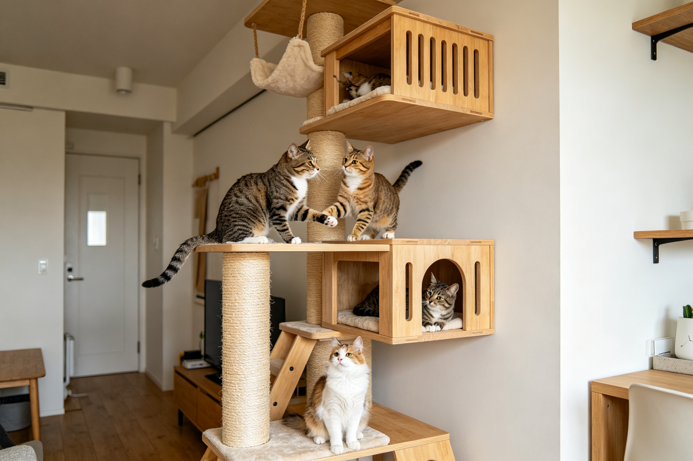

大眾運輸帶寵物規則：台鐵高鐵捷運公車
帶寵物搭大眾運輸不是每種交通工具都可以——台鐵可以裝籃、高鐵有特殊規定、捷運各縣市不同、公車司機有決定權。從全台大眾運輸的寵物規定比對、容器要求、費用、注意事項...

租屋族養寵：寵物友善租屋與簽約注意
租屋族養寵最頭痛的就是找房子——多數房東不願意租給有寵物的房客，即使願意也可能要求高額押金。從尋找寵物友善租屋的管道、如何說服房東、簽約時的注意事項、寵物損壞賠...

台北市寵物公園地圖與評比
台北市有超過20處寵物公園，但品質參差不齊——有些有完善的柵欄和飲水設備，有些只是一塊空地。從台北市主要寵物公園的地圖、設施評比、大小與圍欄狀況、清潔程度、尖峰...

帶貓旅行準備清單：外出籠與旅館選擇
多數貓咪不喜歡旅行，但有時候不得不帶貓出門——搬家、探親、旅行。帶貓旅行的準備從出發前幾週就要開始：適應外出籠、減壓產品、車內安全、旅館選擇、途中餵食與如廁。從...
城市遛狗法律責任：牽繩與排泄物規定
在城市遛狗不是牽著狗走就好——法律對牽繩長度、排泄物清理、攻擊事件的責任都有明確規定。從各縣市的牽繩規定、排泄物清理的法律要求、狗狗攻擊人或其他狗的責任歸屬、公...

寵物友善餐廳：全台連鎖與獨立餐廳比對
越來越多餐廳標榜寵物友善，但「友善」的定義差異很大——有些可以落地跑、有些只能放籠子、有些只接受戶外座位、有些需要額外收費。從全台連鎖餐廳的寵物政策、獨立餐廳的...

公寓養大型犬：噪音、空間與鄰居關係
在公寓養大型犬（黃金獵犬、拉布拉多、哈士奇等）面臨很多現實挑戰——空間不足、噪音投訴、鄰居關係、電梯禮儀。從公寓養大型犬的空間配置、噪音管理（如何減少吠叫與跑步...

寵物計程車與接送服務：Uber Pet比較
帶寵物出門時，大眾運輸不方便、自己沒有車，這時候寵物計程車就是救星。但不是每種計程車都接受寵物——Uber Pet需要額外付費、傳統計程車司機有決定權、寵物專車...

都市貓室內環境豐容：小公寓狩獵需求
都市貓終年住在室內，空間有限、刺激不足，容易出現無聊、肥胖、行為問題。環境豐容（Environmental Enrichment）是解決方案——透過垂直空間利用...